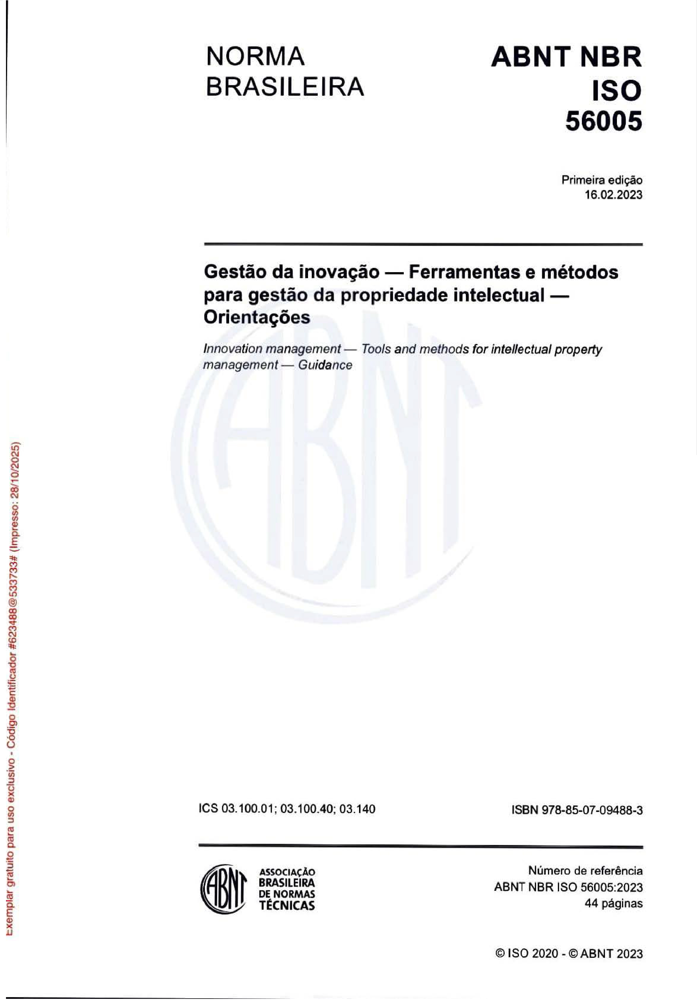
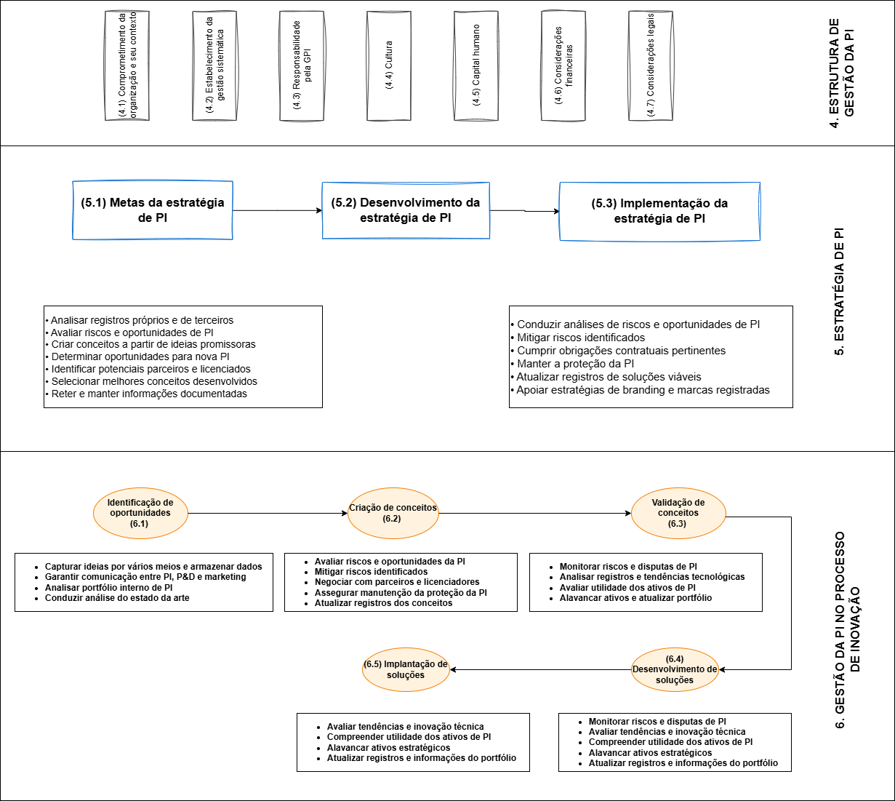
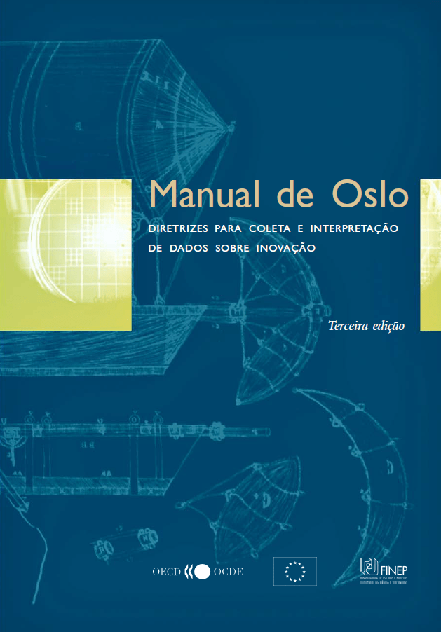
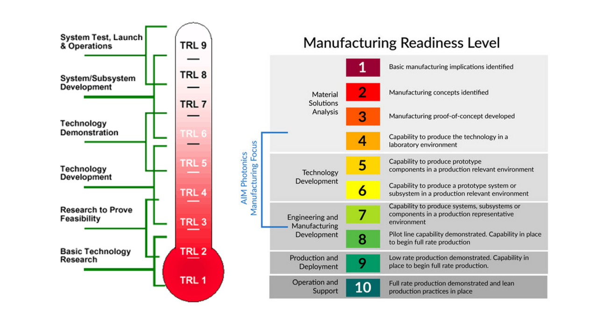
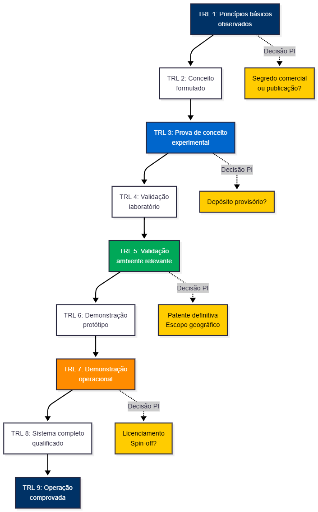
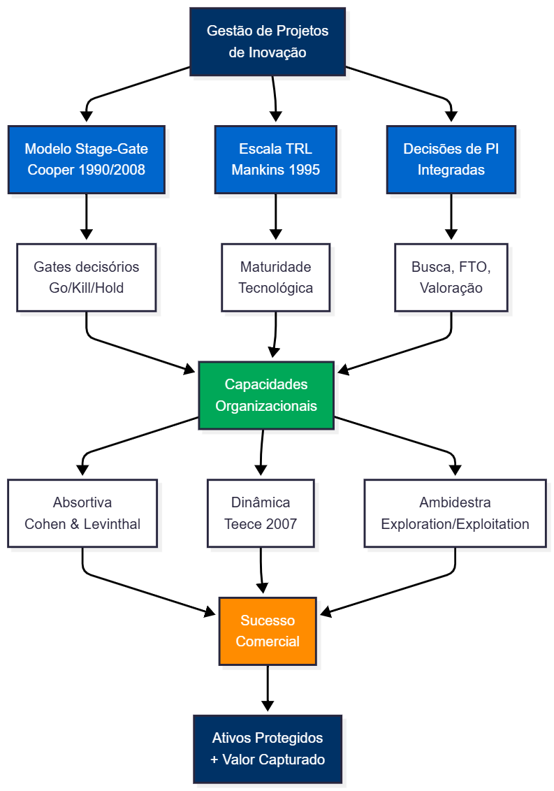
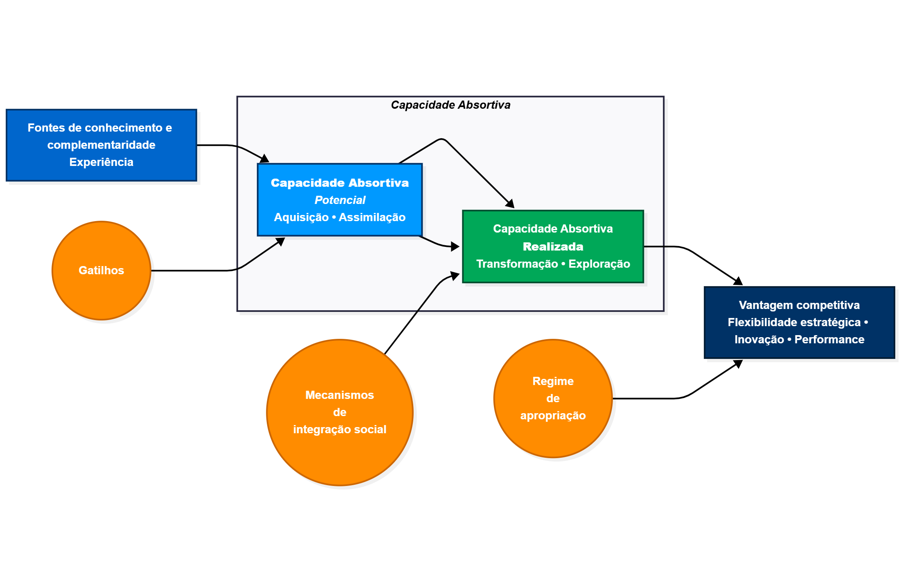
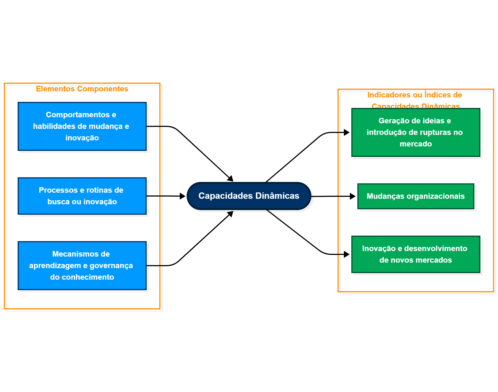
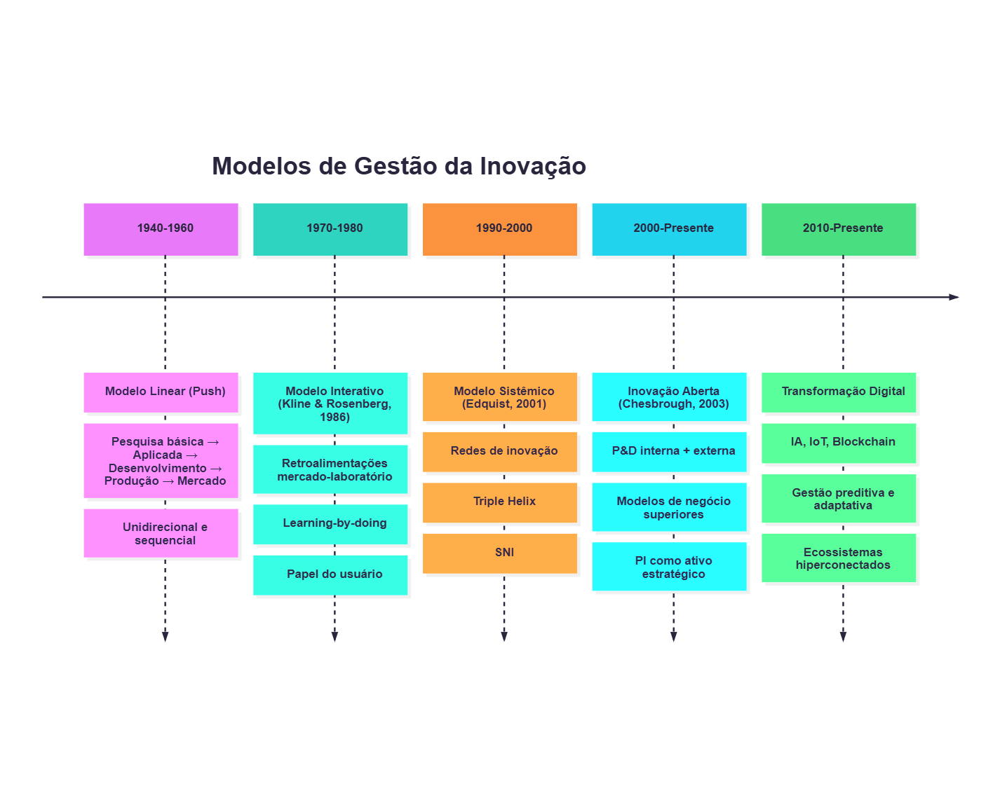

timeline
title Modelos de Gestão da Inovação
1942 : Schumpeter (1942)
: Inovação como "novas combinações" e destruição criativa
1940-1960 : Modelo Linear (Push)
: Pesquisa básica → Aplicada → Desenvolvimento → Produção → Mercado
: Unidirecional e sequencial
1970-1980 : Modelo Interativo (Kline & Rosenberg, 1986)
: Retroalimentações mercado-laboratório
: Learning-by-doing
: Papel do usuário
1990-2000 : Modelo Sistêmico (Edquist, 2001)
: Redes de inovação
: Triple Helix
: SNI
2000-Presente : Inovação Aberta (Chesbrough, 2003)
: P&D interna + externa
: Modelos de negócio superiores
: PI como ativo estratégico
2010-Presente : Transformação Digital
: IA, IoT, Blockchain
: Gestão preditiva e adaptativa
: Ecossistemas hiperconectados
Concurso Edital 05/2025
Gestão de Projetos de Inovação
com Foco em Propriedade Intelectual
Luiz Diego Vidal Santos
Universidade Federal de Sergipe
Visão Geral
Tópicos Principais
- 1 Evolução dos Modelos de Gestão da Inovação
- 2 ISO 56005 e Sistema de Gestão de PI
- 3 Modelo Stage-Gate
- 4 Indicadores de Desempenho
- 5 Capacidades Organizacionais
Objetivo Central
Integrar a propriedade intelectual como componente estratégico transversal em todo o ciclo de inovação, desde a concepção até a comercialização.
Propriedade Intelectual na Economia do Conhecimento
Definição Estratégica
A PI constitui a base jurídica e econômica da economia do conhecimento, funcionando como:
- Instrumento de incentivo ao investimento
- Mecanismo de captura de valor
- Elemento estratégico desde a concepção dos projetos
Mudança de Paradigma
Antes
- Elemento final do processo
- Tratamento reativo
- Decisão posterior à P&D
Agora
- Componente transversal
- Abordagem proativa
- Orientação desde a concepção
Evolução Histórica
Taxonomia dos Modelos de Gestão da Inovação
Conexão com a redação (Tema 5)
- Inovação é não linear e baseada em aprendizagem/retroalimentação (Kline & Rosenberg, 1986)
- Em projetos, isso exige decisões contínuas sobre sigilo, documentação e timing de proteção
- PI deixa de ser “fim do processo” e vira variável estratégica desde a concepção (Schumpeter, 1942)
Do Empírico ao Normativo
Manual de Oslo (OCDE/Eurostat)
- Base conceitual para mensuração da inovação
- Taxonomias e indicadores internacionais
- 852 ocorrências de “inovação”
- 619 ocorrências de “P&D”
- 478 ocorrências de “cooperação”
Operacionalização ISO 56000
ISO 56000: Operacionalização
Transforma conceitos do Manual de Oslo em processos gerenciais:
- ✓ Rastreabilidade das decisões
- ✓ Processos auditáveis
- ✓ Benchmarking setorial
- ✓ Comparabilidade internacional
ISO 56005

Estrutura Completa da ISO 56005:2023
Estrutura da ISO 56005
Nível 1: Estrutura de Gestão
Elementos Estruturais
Comprometimento Organizacional - Análise do contexto interno/externo - Identificação de partes interessadas - Avaliação de riscos e oportunidades
Sistema de Gestão - Processos documentados - Alocação de recursos - Governança clara
Dimensões de Suporte
- 💡 Cultura de PI - disseminação de conhecimento
- 👥 Capital Humano - competências específicas
- ⚖️ Aspectos Legais - compliance regulatório
- 💰 Dimensão Financeira - orçamento e ROI
Nível 2: Estratégia de PI
Ciclo Estratégico
graph LR
A[Definição de Metas] --> B[Desenvolvimento]
B --> C[Implementação]
C --> D[Monitoramento]
D --> A
A1[Análise de registros<br/>próprios e terceiros] -.-> A
A2[Identificação de<br/>oportunidades/riscos] -.-> A
A3[Seleção de conceitos] -.-> A
B1[Análises adicionais] -.-> B
B2[Mitigação de riscos] -.-> B
B3[Obrigações contratuais] -.-> B
B4[Manutenção de proteções] -.-> B
C1[Integração ao<br/>planejamento] -.-> C
C2[Prioridades de<br/>investimento] -.-> C
C3[Planos de exploração] -.-> C
style A fill:#4CAF50,stroke:#333,stroke-width:2px,color:#fff
style B fill:#2196F3,stroke:#333,stroke-width:2px,color:#fff
style C fill:#FF9800,stroke:#333,stroke-width:2px,color:#fff
style D fill:#9C27B0,stroke:#333,stroke-width:2px,color:#fff
Nível 3: Integração aos Processos
Fases de Identificação e Criação
Identificação de Oportunidades - Captura de ideias por múltiplos canais - Análise preliminar de PI existente
Criação de Conceitos - Comunicação entre P&D, marketing e PI - Avaliação de patenteabilidade
Validação de Conceitos - Análise de liberdade de operação - Estudos de viabilidade técnica e jurídica
Fases de Desenvolvimento e Implantação
- 🔬 Desenvolvimento - Escopo geográfico de proteção
- 📋 Modalidades de PI - Patentes, marcas, designs
- 📅 Implantação - Cronograma de depósitos
- 💼 Estratégias de Exploração - Licenciamento e comercialização
Manual de Oslo

7 Categorias de Atividades de Inovação
Segundo o Manual de Oslo (OCDE/Eurostat, 3ª ed.)
1 P&D Interna e Externa - Pesquisa básica e aplicada - Contratação de serviços de P&D - Verificação PI: Análise de anterioridade
2 Aquisição de Máquinas/Equipamentos - Software avançado - Infraestrutura tecnológica - Verificação PI: Licenças de software
3 Aquisição de Conhecimento Externo - Patentes, licenças - Know-how, marcas - Verificação PI: Freedom-to-operate
4 Treinamento - Desenvolvimento de competências - Capacitação em PI - Verificação PI: Cultura organizacional
5 Design e Preparação - Design industrial - Preparação para produção - Verificação PI: Registro de design
6 Introdução no Mercado - Estudos de mercado - Campanhas de lançamento - Verificação PI: Marcas e trade dress
7 Outras Atividades - Estudos de viabilidade - Testes e certificações - Verificação PI: Documentação técnica
Integração ISO 56005 + Manual de Oslo
Alinhamento Estratégico
Cada atividade de inovação do Manual de Oslo é acompanhada de verificações de PI conforme ISO 56005, transformando o SGPI em instrumento de:
- 🛡️ Mitigação de riscos jurídicos
- 💰 Maximização do ROI em inovação
- 📊 Mensuração padronizada
- 🌍 Comparabilidade internacional
Technology Readiness Level

TRL e Estratégia de PI

Sincronização TRL-PI
TRL 1-3: Inicial
Foco: Sigilo - Princípios básicos observados - Conceito formulado - Prova de conceito experimental
Proteção PI: - ⚠️ Sigilo rigoroso - 📄 Publicações estratégicas - 🔍 Estabelecer prior art
TRL 4-6: Intermediário
Foco: Validação - Validação em laboratório - Validação em ambiente relevante - Demonstração em ambiente operacional
Proteção PI: - 📝 Patentes provisórias - 🔍 Freedom-to-operate - 🌍 Definição territorial
TRL 7-9: Avançado
Foco: Comercialização - Protótipo em ambiente operacional - Sistema completo qualificado - Sistema comprovado em operação
Proteção PI: - ✅ Patentes definitivas - 🎨 Registros de design - ™️ Marcas comerciais
Resultado: Sincronização assegura que recursos não sejam desperdiçados em proteção prematura, evitando divulgações que comprometam a novidade.
Stage-Gate

Modelo Stage-Gate (Cooper, 1990-2008)
Processo Stage-Gate
Fases e Gates com PI Integrada
graph LR
I[Ideia] --> G0{Gate 0<br/>Triagem}
G0 -->|Go| S1[Stage 1<br/>Escopo]
S1 --> G1{Gate 1<br/>Análise<br/>PI}
G1 -->|Go| S2[Stage 2<br/>Business Case]
G1 -->|Kill| K[❌]
S2 --> G2{Gate 2<br/>Viabilidade}
G2 -->|Go| S3[Stage 3<br/>Desenvolvimento]
G2 -->|Hold| H[⏸️]
G2 -->|Kill| K
S3 --> G3{Gate 3<br/>Teste}
G3 -->|Go| S4[Stage 4<br/>Validação]
S4 --> G4{Gate 4<br/>Lançamento}
G4 -->|Go| S5[Stage 5<br/>Comercialização]
style I fill:#003366,color:#fff
style G0 fill:#FF8C00,color:#fff
style G1 fill:#FF8C00,color:#fff
style G2 fill:#FF8C00,color:#fff
style G3 fill:#FF8C00,color:#fff
style G4 fill:#FF8C00,color:#fff
style S1 fill:#4CAF50,color:#fff
style S2 fill:#4CAF50,color:#fff
style S3 fill:#00A859,color:#fff
style S4 fill:#4CAF50,color:#fff
style S5 fill:#0066CC,color:#fff
style K fill:#CC0000,color:#fff
style H fill:#CCCC00,color:#000
Stage-Gate + TRL + Desenvolvimento de Patentes
graph TB
subgraph "Stage 1: Escopo (TRL 1-2)"
A[Busca Preliminar<br/>Anterioridade] --> B[Disclosure de<br/>Invenção]
B --> C[Segredo ou<br/>Publicação?]
end
subgraph "Stage 2: Business Case (TRL 3-4)"
D[Busca Completa<br/>Anterioridade] --> E[Análise FTO]
E --> F[Estratégia Territorial]
F --> G[Orçamento PI]
end
subgraph "Stage 3: Desenvolvimento (TRL 5-6)"
H[Depósito Patente<br/>Provisório] --> I[Validação<br/>Técnica]
I --> J[Patente Definitiva<br/>+ PCT?]
end
subgraph "Stage 4: Validação (TRL 7-8)"
K[Proteção<br/>Complementar] --> L[Design Industrial<br/>Marca]
L --> M[Valoração de<br/>Ativos]
end
subgraph "Stage 5: Comercialização (TRL 9)"
N[Licenciamento] --> O[Spin-off]
O --> P[Exploração<br/>Direta]
end
C --> D
G --> H
J --> K
M --> N
style A fill:#003366,color:#fff
style H fill:#00A859,color:#fff
style M fill:#FF8C00,color:#fff
style P fill:#0066CC,color:#fff
Convergência Stage-Gate + ISO 56005
Harmonização Estratégica
Quando o modelo Stage-Gate é harmonizado com a ISO 56005, cada gate incorpora:
Entregáveis de PI
- 📋 Relatórios de anterioridade
- 🔍 Análises de freedom-to-operate
- 💡 Formulários de divulgação de invenções
- 🌐 Estratégias territoriais
- 💼 Planos de exploração comercial
Benefícios
- ✅ Rastreabilidade das decisões
- ⚖️ Proteção jurídica em cada etapa
- 📊 Governança aprimorada
- 🎯 SGPI operacional efetivo
Artefatos da ISO 56005
Anexos Informativos da ABNT NBR ISO 56005:2023
A norma detalha instrumentos práticos para padronizar coleta de informações e tomada de decisão:
Documentos Estruturados
- Invention Disclosure Form
- Formulário de divulgação de invenção
- Captura sistemática de informações
- Padronização de dados
- Employee PI Management Guide
- Guia para atividades de PI com funcionários
- Direitos e deveres
- Incentivos à divulgação
Ferramentas de Avaliação
- DPI Assessment Tools
- Ferramentas para avaliação de PI
- Análise de valor
- Priorização de ativos
Objetivo: Transformar conhecimento tácito em processos estruturados e auditáveis dentro do SGPI
Indicadores de Desempenho

Framework de Indicadores (Manual de Oslo)
Indicadores de INPUT
- 💰 Investimento total em atividades de inovação
- 🔍 Recursos em busca de anterioridade
- 📊 Recursos em análise de freedom-to-operate
- 💳 Custos de depósito e manutenção de ativos
Indicadores de PROCESSO
- ⏱️ Tempo médio: invenção → decisão de proteção
- ✅ Taxa de aprovação nos gates
- 🎯 Alinhamento portfólio PI vs estratégia
Indicadores de OUTPUT
- 📜 Número de patentes concedidas
- 💻 Registros de software efetivados
- 🤝 Contratos de licenciamento firmados
- 💵 Receita de royalties
Indicadores de IMPACTO
- 📈 % receita de produtos com PI
- 🏆 Market share de inovações patenteadas
- 💹 Redução de custos operacionais
- 🌟 Valor de mercado atribuível a PI
Arquitetura de Indicadores Integrada
graph TB
A[Framework de Indicadores<br/>Manual de Oslo + ISO 56005]
B[INPUT]
C[PROCESSO]
D[OUTPUT]
E[IMPACTO]
A --> B
A --> C
A --> D
A --> E
B --> B1[Investimento em<br/>atividades de inovação]
B --> B2[Recursos em PI<br/>busca + análise]
C --> C1[Tempo médio<br/>invenção → proteção]
C --> C2[Taxa aprovação<br/>gates decisórios]
C --> C3[Alinhamento<br/>portfólio-estratégia]
D --> D1[Patentes concedidas]
D --> D2[Contratos de<br/>licenciamento]
D --> D3[Receita de royalties]
E --> E1[% receita de<br/>produtos com PI]
E --> E2[Market share<br/>inovações patenteadas]
E --> E3[Valor de mercado<br/>atribuível a PI]
T1[TRL 1-3] -.-> B
T2[TRL 4-6] -.-> C
T3[TRL 7-9] -.-> D
T4[Comercial] -.-> E
SG[Stage-Gate<br/>Gates 1-5] -.-> C
style A fill:#00703C,stroke:#333,stroke-width:3px,color:#fff
style B fill:#2196F3,stroke:#333,stroke-width:2px,color:#fff
style C fill:#4CAF50,stroke:#333,stroke-width:2px,color:#fff
style D fill:#FF9800,stroke:#333,stroke-width:2px,color:#fff
style E fill:#9C27B0,stroke:#333,stroke-width:2px,color:#fff
Mensuração e Decisão Estratégica
Alinhamento TRL + Stage-Gate + Indicadores
A arquitetura de indicadores permite:
- 📊 Avaliar eficácia do SGPI em diferentes estágios de maturidade tecnológica
- 🎯 Orientar decisões de continuidade/descontinuidade de projetos
- 🔄 Melhoria contínua baseada em evidências
- 🌍 Benchmarking com padrões internacionais
Capacidades Organizacionais

Fundamentos das Capacidades
Capacidade Absortiva
Modelo de Capacidade Absortiva
flowchart LR
%% Blocos principais
A[Fontes de conhecimento<br/>Complementaridade<br/>Experiência] --> B
B["<b>Capacidade Absortiva Potencial</b><br/>Aquisição • Assimilação"] --> C
C["<b>Capacidade Absortiva Realizada</b><br/>Transformação • Exploração"] --> D
D[Vantagem competitiva<br/>Flexibilidade estratégica<br/>Inovação • Performance]
%% Gatilhos e mecanismos
E((Gatilhos)) -.-> B
F((Mecanismos de<br/>integração social)) -.-> C
G((Regime de<br/>apropriação)) -.-> D
style A fill:#0066CC,stroke:#003366,stroke-width:2px,color:#fff,font-weight:bold
style B fill:#0099FF,stroke:#003366,stroke-width:2px,color:#fff,font-weight:bold
style C fill:#00A859,stroke:#004D2E,stroke-width:2px,color:#fff,font-weight:bold
style D fill:#003366,stroke:#001a33,stroke-width:2px,color:#fff,font-weight:bold
style E fill:#FF8C00,stroke:#CC6600,stroke-width:2px,color:#fff,font-weight:bold
style F fill:#FF8C00,stroke:#CC6600,stroke-width:2px,color:#fff,font-weight:bold
style G fill:#FF8C00,stroke:#CC6600,stroke-width:2px,color:#fff,font-weight:bold
Cohen & Levinthal (1990): Aptidão de reconhecer, assimilar e aplicar comercialmente conhecimento externo, dependente de trajetórias anteriores de investimento (path dependency)
Dimensões da Capacidade Absortiva
Capacidade Potencial
1. Aquisição - Identificação de conhecimento valioso - Monitoramento tecnológico - Scanning do ambiente
2. Assimilação - Absorção de conhecimento externo - Tradução para contexto interno - Codificação e armazenamento
Capacidade Realizada
3. Transformação - Combinação com conhecimento existente - Reconfiguração de recursos - Adaptação organizacional
4. Exploração - Aplicação comercial - Geração de inovação - Captura de valor
Capacidades Dinâmicas (Teece, 2007)
Capacidades Dinâmicas
Modelo de Capacidades Dinâmicas (Teece, 2007)
flowchart LR
%% Elementos componentes à esquerda
A1[Comportamentos e habilidades<br/>de mudança e inovação] --> C
A2[Processos e rotinas de<br/>busca ou inovação] --> C
A3[Mecanismos de aprendizagem<br/>e governança do conhecimento] --> C
%% Bloco central
C([<b>Capacidades<br/>Dinâmicas</b>])
%% Indicadores à direita
C --> B1[Geração de ideias e<br/>introdução de rupturas]
C --> B2[Mudanças<br/>organizacionais]
C --> B3[Inovação e<br/>novos mercados]
style A1 fill:#0099FF,stroke:#003366,stroke-width:2px,color:#fff,font-weight:bold
style A2 fill:#0099FF,stroke:#003366,stroke-width:2px,color:#fff,font-weight:bold
style A3 fill:#0099FF,stroke:#003366,stroke-width:2px,color:#fff,font-weight:bold
style B1 fill:#00A859,stroke:#004D2E,stroke-width:2px,color:#fff,font-weight:bold
style B2 fill:#00A859,stroke:#004D2E,stroke-width:2px,color:#fff,font-weight:bold
style B3 fill:#00A859,stroke:#004D2E,stroke-width:2px,color:#fff,font-weight:bold
style C fill:#003366,stroke:#001a33,stroke-width:3px,color:#fff,font-weight:bold,font-size:16px
Três Pilares das Capacidades Dinâmicas
1 Sensing
Perceber Oportunidades
- Scanning do ambiente
- Identificação de tendências
- Monitoramento de concorrentes
- Análise de sinais fracos
2 Seizing
Mobilizar Recursos
- Alocação de recursos
- Estruturação de projetos
- Decisões de investimento
- Formação de parcerias
3 Transforming
Transformar Ativos
- Reconfiguração contínua
- Adaptação à mudança
- Renovação da base de ativos
- Evolução organizacional
Contexto: Habilidade essencial em ambientes incertos e turbulentos, permitindo transformação contínua da organização
Cultura de Propriedade Intelectual
Seção 4.4 da NBR ISO 56005:2023
Elemento essencial previsto na norma, sustentado pelas capacidades absortiva e dinâmica
Componentes da Cultura de PI
- Disseminação de Conhecimento
- Treinamentos regulares
- Workshops sobre PI
- Materiais educativos
- Incentivo à Divulgação
- Reconhecimento de inventores
- Recompensas por divulgações
- Facilitação do processo
- Promoção da Confidencialidade
- Políticas de sigilo
- NDAs padronizados
- Gestão de acesso à informação
- Cumprimento de Prazos Legais
- Calendário de PI
- Alertas automáticos
- Responsabilidades definidas
Resultado: Ambidestria organizacional - equilíbrio entre exploração de novas oportunidades e eficiência na proteção/valorização de ativos existentes
Ferramentas de PI

Ferramentas Analíticas de PI
Instrumentos de Apoio à Decisão
A ISO 56005 é apoiada por ferramentas que padronizam coleta de informações e subsidiam decisões técnicas e estratégicas
Ferramentas de Análise Técnica
1. Paisagem Patentária (Patent Landscape) - Mapeamento tecnológico completo - Identificação de white spaces - Análise de tendências de patenteamento - Posicionamento competitivo
2. Freedom-to-Operate (FTO) - Análise de risco de infração - Identificação de patentes bloqueadoras - Estratégias de contorno (design around) - Due diligence jurídica
Ferramentas de Valoração
3. Valoração de Intangíveis - Método de Custo: custos de desenvolvimento - Método de Mercado: transações comparáveis - Método de Renda: fluxo de caixa futuro - Opções Reais: flexibilidade estratégica
Integração: Ferramentas usadas em diferentes gates do Stage-Gate conforme maturidade tecnológica (TRL)
Artefatos Padronizados ISO 56005
ABNT NBR ISO 56005:2023 - Anexos Informativos
Instrumentos práticos que transformam conhecimento tácito em processos estruturados e auditáveis
graph TB
A[Artefatos ISO 56005]
B[Invention Disclosure Form]
C[Employee PI Guide]
D[DPI Assessment Tools]
E[Contract Management]
A --> B
A --> C
A --> D
A --> E
B --> B1[Captura sistemática<br/>de informações]
B --> B2[Descrição técnica<br/>detalhada]
B --> B3[Identificação de<br/>inventores]
B --> B4[Avaliação preliminar<br/>de patenteabilidade]
C --> C1[Direitos e deveres<br/>dos funcionários]
C --> C2[Incentivos à<br/>divulgação]
C --> C3[Políticas de<br/>confidencialidade]
C --> C4[Cumprimento de<br/>prazos legais]
D --> D1[Análise de valor<br/>de ativos]
D --> D2[Priorização de<br/>proteções]
D --> D3[Gestão de<br/>portfólio]
D --> D4[Decisões de<br/>manutenção]
E --> E1[Guias de PI em<br/>contratos]
E --> E2[Cláusulas<br/>padronizadas]
E --> E3[NDAs e<br/>confidencialidade]
E --> E4[Acordos de<br/>co-desenvolvimento]
style A fill:#00703C,stroke:#333,stroke-width:3px,color:#fff
style B fill:#2196F3,stroke:#333,stroke-width:2px,color:#fff
style C fill:#4CAF50,stroke:#333,stroke-width:2px,color:#fff
style D fill:#FF9800,stroke:#333,stroke-width:2px,color:#fff
style E fill:#9C27B0,stroke:#333,stroke-width:2px,color:#fff
Formulário de Divulgação de Invenção
Seções Principais do IDF
1. Informações Básicas - Título da invenção - Data de concepção - Lista de inventores e contribuições - Vínculo institucional
2. Descrição Técnica - Problema técnico resolvido - Estado da técnica (prior art) - Solução proposta - Vantagens e diferenciais
3. Aspectos Comerciais - Aplicações potenciais - Mercados-alvo - Competidores conhecidos - Estimativa de demanda
4. Informações de PI - Divulgações anteriores - Publicações relacionadas - Segredos comerciais envolvidos - Urgência de proteção
Função: Captura sistemática que alimenta decisões de proteção nos gates do Stage-Gate
Colaboração e PI
Gestão de PI em Projetos Colaborativos
Relevância (Manual de Oslo)
Cooperação identificada como fonte primária de conhecimento externo para inovação
478 ocorrências no Manual de Oslo
Desafios em Co-desenvolvimento
- Múltiplos parceiros
- Contribuições heterogêneas
- Assimetrias informacionais
- Risco de conflitos futuros
- Complexidade contratual
Exigências do SGPI (ex ante)
- Regime de Titularidade
- PI conjunta
- PI separada
- PI proporcional à contribuição
- Direitos de Exploração
- Exclusivos vs não-exclusivos
- Territorialidade
- Sublicenciamento
Definições Contratuais Ex Ante
Princípio Fundamental
Todos os aspectos de PI devem ser estabelecidos antes (ex ante) do início do projeto colaborativo
1. Regime de Titularidade
Opções de Titularidade:
- PI Conjunta (Joint Ownership)
- Todos os parceiros co-titulares
- Decisões por consenso
- PI Separada
- Cada parceiro titular de suas contribuições
- Licenças cruzadas quando necessário
- PI Proporcional
- Titularidade proporcional à contribuição
- Requer métrica de avaliação acordada
2. Direitos de Exploração
Definições Necessárias:
- Exclusividade
- Direitos exclusivos vs não-exclusivos
- Por território geográfico
- Por campo de aplicação
- Sublicenciamento
- Permissão para sublicenciar
- Condições e royalties
- Background vs Foreground IP
- Conhecimento prévio (background)
- Conhecimento gerado (foreground)
Instrumentos de Gestão Colaborativa
Recomendações da ISO 56005
Uso de instrumentos padronizados para reduzir custos de transação e assimetrias informacionais
Documentos Contratuais
- 📄 Term Sheets
- Termos preliminares não-vinculantes
- Intenções e objetivos das partes
- Base para negociação detalhada
- 🤝 Acordos de Co-desenvolvimento
- Responsabilidades técnicas detalhadas
- Marcos (milestones) e entregáveis
- Cronogramas e orçamentos
- ⚖️ Joint Ownership Agreements
- Titularidade compartilhada definida
- Regras de exploração comercial
- Divisão de custos de manutenção
Cláusulas Essenciais
3. Confidencialidade e Não-Competição - NDAs específicos para o projeto - Períodos de proteção pós-projeto - Exceções permitidas
4. Resolução de Disputas - Arbitragem como primeira instância - Mediação prévia obrigatória - Jurisdição e lei aplicável - Cláusulas escalonadas (escalation)
Benefício: Clareza contratual prévia mitiga conflitos futuros e acelera comercialização conjunta
Redução de Custos de Transação
graph LR
A[Instrumentos<br/>Padronizados<br/>ISO 56005] --> B[Redução de<br/>Assimetrias<br/>Informacionais]
B --> C[Menor Custo<br/>de Transação]
C --> D[Aceleração<br/>da Comercialização]
E[Term Sheets] --> A
F[Co-dev Agreements] --> A
G[Joint Ownership] --> A
H[NDAs Padronizados] --> A
D --> I[Maior ROI<br/>em P&D<br/>Colaborativo]
D --> J[Parcerias<br/>Mais Ágeis]
D --> K[Menos<br/>Litígios]
style A fill:#00703C,stroke:#333,stroke-width:3px,color:#fff
style B fill:#2196F3,stroke:#333,stroke-width:2px,color:#fff
style C fill:#4CAF50,stroke:#333,stroke-width:2px,color:#fff
style D fill:#FF9800,stroke:#333,stroke-width:2px,color:#fff
style I fill:#9C27B0,stroke:#333,stroke-width:2px,color:#fff
style J fill:#9C27B0,stroke:#333,stroke-width:2px,color:#fff
style K fill:#9C27B0,stroke:#333,stroke-width:2px,color:#fff
Teoria dos Custos de Transação (Williamson, 1985): Contratos bem estruturados reduzem oportunismo e incerteza, facilitando cooperação
Obstáculos à Inovação

4 Dimensões de Obstáculos (Manual de Oslo)
graph TB
A[Obstáculos à Gestão de PI<br/>em Projetos de Inovação]
B[Econômicos]
C[Conhecimento]
D[Mercado]
E[Institucionais]
A --> B
A --> C
A --> D
A --> E
B --> B1[Custos de<br/>patenteamento<br/>internacional]
B --> B2[Manutenção de<br/>portfólios extensos]
B --> B3[Valley of death:<br/>financiamento-ponte]
C --> C1[Falta de pessoal<br/>qualificado em PI]
C --> C2[Assimetrias na<br/>valoração de ativos]
C --> C3[Desconhecimento<br/>de mecanismos]
D --> D1[Incerteza sobre<br/>demanda futura]
D --> D2[Dificuldade de<br/>identificar parceiros]
D --> D3[Mercados dominados<br/>por patentes essenciais]
E --> E1[Backlog do INPI:<br/>morosidade]
E --> E2[Divergências<br/>regulatórias]
E --> E3[Fragilidades no<br/>enforcement]
style A fill:#00703C,stroke:#333,stroke-width:3px,color:#fff
style B fill:#F44336,stroke:#333,stroke-width:2px,color:#fff
style C fill:#FF9800,stroke:#333,stroke-width:2px,color:#fff
style D fill:#2196F3,stroke:#333,stroke-width:2px,color:#fff
style E fill:#9C27B0,stroke:#333,stroke-width:2px,color:#fff
Mitigação de Obstáculos
Proposta da ISO 56005
O SGPI deve incorporar análise sistemática de obstáculos com planos de mitigação específicos para cada categoria
Estratégias Econômicas
- 💰 Priorização territorial inteligente
- 🤝 Consórcios para redução de custos
- 💵 Acesso a fundos de inovação
- 📊 Gestão de portfólio otimizada
Estratégias de Conhecimento
- 🎓 Programas de capacitação contínua
- 🔍 Parcerias com especialistas
- 📚 Bases de conhecimento internas
- 🏛️ Colaboração com ICTs
Estratégias de Mercado
- 📈 Estudos de inteligência competitiva
- 🌐 Plataformas de matching
- 🔓 Análise de patent pools
- 🤝 Licenciamento cruzado
Estratégias Institucionais
- ⚡ Exame prioritário (fast-track)
- 🌍 Protocolo PCT estratégico
- ⚖️ Arbitragem alternativa
- 🛡️ Seguros de PI
Resiliência do SGPI
Objetivo da Análise de Obstáculos
Assegurar resiliência dos projetos de inovação diante de adversidades previsíveis, transformando riscos em oportunidades de melhoria contínua
Resultado Esperado:
- ✅ Antecipação de problemas
- 🎯 Planos de contingência
- 📊 Monitoramento sistemático
- 🔄 Aprendizado organizacional
Marco Regulatório
Integração: Ferramentas + Marco Legal + Indicadores
Ecossistema Completo de Gestão de PI
A ISO 56005 integra ferramentas analíticas, marco legal e indicadores de desempenho em sistema coeso
graph TB
A[Sistema de Gestão<br/>de PI - SGPI]
B[Ferramentas<br/>Analíticas]
C[Marco Legal<br/>Brasileiro]
D[Indicadores de<br/>Desempenho]
A --> B
A --> C
A --> D
B --> B1[Paisagem Patentária]
B --> B2[Freedom-to-Operate]
B --> B3[Valoração]
B --> B4[IDF]
C --> C1[Lei 9.279/1996<br/>Propriedade Industrial]
C --> C2[Lei 10.973/2004<br/>Inovação]
C --> C3[Res. CNPq 30/2020<br/>Bolsas]
C --> C4[Port. MCTI 1.122/2020<br/>ICTs]
D --> D1[Input:<br/>Investimentos]
D --> D2[Processo:<br/>Tempo/Qualidade]
D --> D3[Output:<br/>Patentes/Contratos]
D --> D4[Impacto:<br/>Receita/Market Share]
E[Rastreabilidade<br/>Transparência<br/>Conformidade] --> A
style A fill:#00703C,stroke:#333,stroke-width:4px,color:#fff
style B fill:#2196F3,stroke:#333,stroke-width:2px,color:#fff
style C fill:#FF9800,stroke:#333,stroke-width:2px,color:#fff
style D fill:#9C27B0,stroke:#333,stroke-width:2px,color:#fff
style E fill:#4CAF50,stroke:#333,stroke-width:2px,color:#fff
Ferramentas Analíticas Integradas
Instrumentos de Apoio à Decisão
1. Paisagem Patentária (Patent Landscape) - Mapeamento tecnológico completo do setor - Identificação de white spaces (oportunidades) - Análise de tendências temporais - Posicionamento competitivo relativo
2. Análise de Liberdade de Operação (FTO) - Identificação de patentes bloqueadoras - Avaliação de risco de infração - Estratégias de design around - Due diligence jurídica pré-investimento
3. Valoração de Intangíveis - Custo: custos históricos de P&D - Mercado: transações comparáveis - Renda: fluxo de caixa descontado - Opções Reais: flexibilidade de expansão
4. Formulários e Guias - Invention Disclosure Form (IDF) - Employee PI Management Guide - Contract Management Templates - DPI Assessment Tools
Função: Reduzir assimetrias informacionais e subsidiar decisões nos gates do Stage-Gate
Marco Legal Brasileiro Aplicável
Arcabouço Regulatório para Gestão de PI em Projetos de Inovação
Legislação Fundamental
⚖️ Lei nº 9.279/1996 - LPI - Regula direitos e obrigações de PI - Define patenteabilidade e exclusões - Procedimentos de depósito e concessão - Infrações e penalidades
🔬 Lei nº 10.973/2004 - Lei de Inovação - Incentivos à inovação no ambiente produtivo - Participação de ICTs em projetos - Compartilhamento de laboratórios - Criação de NITs (Núcleos de Inovação)
Regulamentação Complementar
🎓 Resolução CNPq nº 30/2020 - Disciplina concessão de bolsas de pesquisa - Define titularidade de PI em bolsas - Estabelece direitos e deveres de bolsistas - Regula compartilhamento de benefícios
🏛️ Portaria MCTI nº 1.122/2020 - Diretrizes para gestão de PI em ICTs - Política institucional de PI obrigatória - Composição e atribuições dos NITs - Prestação de contas de resultados
Rastreabilidade e Transparência do SGPI
ISO 56005 + Marco Legal: Sistema Auditável
A combinação de ferramentas padronizadas com arcabouço legal robusto fortalece governança da inovação
Rastreabilidade
- 📋 Documentação Completa
- Todas as decisões de PI registradas
- Formulários padronizados (IDF, etc.)
- 🔗 Trilhas de Auditoria
- Histórico de avaliações e pareceres
- Versionamento de decisões
- ⏱️ Cronogramas Verificáveis
- Cumprimento de prazos legais
- Alertas automáticos de deadlines
Transparência
- 👁️ Visibilidade de Processos
- Dashboards de acompanhamento
- Relatórios periódicos
- 📈 Indicadores Públicos
- Input, processo, output, impacto
- Comparabilidade com benchmarks
- ✅ Conformidade Regulatória
- Alinhamento com Lei de Inovação
- Prestação de contas a agências de fomento
Resultado: SGPI que transforma práticas empíricas em processos estruturados, mensuráveis e auditáveis
Conclusão
Síntese: Integração PI-Inovação
Elemento Central para Competitividade
A integração entre gestão da inovação e propriedade intelectual constitui elemento central para a competitividade e sustentabilidade tecnológica das organizações
Evolução Histórica
- Modelos lineares → interativos → abertos
- Empirismo → padronização normativa
- ISO 56000 + Manual de Oslo
Instrumentos Operacionais
- Stage-Gate harmonizado com ISO 56005
- TRL sincronizado com estratégia de PI
- Framework de indicadores integrado
Capacidades Essenciais
- Capacidade absortiva (Cohen & Levinthal)
- Capacidades dinâmicas (Teece)
- Cultura organizacional de PI
Arcabouço Estruturado
- Ciência + Direito + Gestão
- PI: instrumento jurídico → componente estratégico
- Governança da inovação robusta
Transformação Estratégica
Quando aplicada de forma sistêmica, essa integração permite:
Conversão de Valor
- 💡 Conhecimento → Valor econômico
- 🌱 Inovação → Impacto social
- 🌍 Tecnologia → Sustentabilidade ambiental
Fortalecimento Institucional
- 📈 Maturidade institucional ampliada
- 💪 Capacidade de gerar riqueza
- 🏆 Capacidade de reter valor
- 🔄 Ciclo virtuoso de inovação
Resultado Final: Organizações com SGPI efetivo convertem sistematicamente conhecimento em vantagem competitiva sustentável baseada em inovação
Referências
Bibliografia
Normas e Manuais - OCDE/Eurostat. Manual de Oslo: Diretrizes para Coleta e Interpretação de Dados sobre Inovação. 3ª edição. FINEP, 2005. - ABNT NBR ISO 56005:2023. Gestão da inovação - Ferramentas e métodos para gestão da propriedade intelectual. 2023.
Modelos de Gestão - Chesbrough, H. Open Innovation: The New Imperative for Creating and Profiting from Technology. Harvard Business School Press, 2003. - Cooper, R.G. Stage-gate systems: a new tool for managing new products. Business Horizons, 1990. - Cooper, R.G. Perspective: The Stage-Gate idea-to-launch process – Update, what’s new, and NexGen systems. Journal of Product Innovation Management, 2008. - Kline, S.J.; Rosenberg, N. An overview of innovation. In: Landau, R.; Rosenberg, N. (Eds.). The Positive Sum Strategy. National Academy Press, 1986. - Rothwell, R. Towards the fifth-generation innovation process. International Marketing Review, 1994.
Capacidades Organizacionais - Cohen, W.M.; Levinthal, D.A. Absorptive capacity: a new perspective on learning and innovation. Administrative Science Quarterly, 1990.
- Teece, D.J. Explicating dynamic capabilities: the nature and microfoundations of (sustainable) enterprise performance. Strategic Management Journal, 2007.
- Teece, D.J. Profiting from technological innovation: implications for integration, collaboration, licensing and public policy. Research Policy, 1986.
Teoria Organizacional - Grant, R.M. Toward a knowledge-based theory of the firm. Strategic Management Journal, 1996. - Williamson, O.E. The Economic Institutions of Capitalism. Free Press, 1985.
Ecossistemas de Inovação - Etzkowitz, H.; Leydesdorff, L. The dynamics of innovation: from National Systems and “Mode 2” to a Triple Helix of university-industry-government relations. Research Policy, 2000. - Gawer, A.; Cusumano, M.A. Industry platforms and ecosystem innovation. Journal of Product Innovation Management, 2014.
Tecnologia e PI - Mankins, J.C. Technology Readiness Levels: A White Paper. NASA, 1995. - Reitzig, M. Strategic management of intellectual property. MIT Sloan Management Review, 2004.
Legislação
Marco Legal Brasileiro
Lei nº 9.279, de 14 de maio de 1996
Regula direitos e obrigações relativos à propriedade industrial.Lei nº 10.973, de 2 de dezembro de 2004
Dispõe sobre incentivos à inovação e à pesquisa científica e tecnológica no ambiente produtivo (Lei de Inovação).Resolução CNPq nº 30/2020
Disciplina a concessão de bolsas e a propriedade intelectual decorrente.Portaria MCTI nº 1.122/2020
Estabelece diretrizes para a gestão da propriedade intelectual nas Instituições Científicas, Tecnológicas e de Inovação (ICTs).
Obrigado!
Gestão de Projetos de Inovação com Foco em PI
Tema 5 - UFS Concurso

UFS - Universidade Federal de Sergipe | Tema 5 - Gestão de Projetos de Inovação com Foco em PI